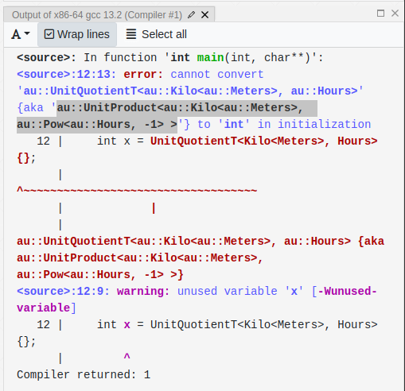

Forward declarations¶
Forward declarations can meaningfully speed up the compilation of C++ programs in some situations, but creating them manually can also be error prone. Au includes authoritatively correct and tested forward declarations. This page explains how to use them.
Tip
Au itself is generally pretty fast to compile, costing under a second on most modern configurations. Most users won’t need to forward declare Au’s types. However, for situations where you really do need every bit of speed, these forward declarations can help.
How to use¶
First, identify the file in your project that could benefit from forward declarations. This is
usually a file that gets included in several other files, and the point is to speed up compilation
for those other files. The header file (*.hh) for a library target can sometimes benefit from
forward declarations. A few library targets in your project might even provide their own forward
declaration files (*_fwd.hh) — in these instances, you’ll definitely want to use Au’s forward
declarations.
Note
If you’re defining compound units (as explained below), you’ll also need to identify
a corresponding file that will include the full Au headers. If there’s an associated .cc
file, this is always a good choice. Alternatively, if this is a library target that provides
a _fwd.hh file, then you can use the corresponding .hh file.
Once you’ve identified which file(s) will be using the forward declarations, you’ll include the
appropriate "fwd" headers from Au in that file, while using the “full” Au headers in the other
files for that target.
Here are Au’s forward declaration headers, and what each provides.
Core library types: "au/fwd.hh"¶
Every use of Au forward declarations must include this file. It provides both core library types, and a few utilities for combining other units.
Here’s a partial listing of what’s included in the core library forward declarations.
Quantity<U, R>type (note that you’ll need forward-declared units for this to be useful)QuantityD<U>,QuantityI<U>, and the other “rep-named aliases” forQuantityQuantityPoint<U, R>type (again: requires units to be forward declared separately)QuantityPointD<U>,QuantityPointI<U>, and the other “rep-named aliases” forQuantityPointKilo,Mega, and the other SI prefixesZerotype (but not theZEROinstance)ForwardDeclareUnitPowandForwardDeclareUnitProductto help forward declare compound units (we’ll explain how to use these further below).
Unit types: "au/units/xyz_fwd.hh"¶
Any unit that can be found in, say, "au/units/xyz.hh" will have a corresponding forward
declaration file, "au/units/xyz_fwd.hh".
When combined with the core library forward declarations, this is enough to declare an interface
that takes, say, const QuantityD<Kilo<Meters>>& as an argument.
This is not enough to forward declare a compound unit, such as meters per second. Our best
practices for new units suggests using a simple alias in this
case, rather than a strong type (for example, UnitQuotientT<Meters, Seconds>). However, this
cannot be computed without the full machinery of the library, which can cost tens of milliseconds.
This may not sound like much, but it’s far too slow for a forward declaration file.
How slow is "too slow"?
Time measurements will of course vary based on the hardware and toolchain, but here are some numbers from one modern development machine.
We found that the cost to include "au/fwd.hh" was about 5 ms. The vast majority of this was
the cost of including <cstdint>. If your file already includes <cstdint> by some other
pathway — which is extremely common — then there is no additional cost to include it
a second time via "au/fwd.hh". In this case, the remaining cost was about 1 ms. This is the
target that we aim for.
For calibration purposes, the cost of including <vector> on this same configuration was about
100 ms. And the cost of including "au/au.hh" — essentially, “the whole library” (without
individual units) — was around 500 ms.
We resolve this with a “warrant and check” approach, explained in the next section.
Compound units¶
The only way to forward declare a compound unit is to specify the exact types that go into the
UnitProduct<...> template, and in the exact correct order. We generally avoid having end users do
this, both because it’s hard to get right, and because it’s an encapsulated implementation detail
which could change. However, for cases where the added speed from forward declaration really
matters, we can do the next best thing: make it easy to check that it’s right.
Here is a series of steps to follow to forward declare compound units.
-
Find the types in
UnitProduct<...>. One trick to do this is to assign an instance of the compound unit type itself to another type, say, anint. The compiler error will contain the correct type name. Look forUnitProduct<...>in the error message. -
Forward declare the powers with
ForwardDeclareUnitPow<...>. If any of the types inUnitProduct<...>are instances ofPoworRatioPow, you’ll want to make an alias for those types. If your compound unit is, say, the inverse cube of a unit, you can forward declare it like this:using InverseYourUnitsCubedFwd = ForwardDeclareUnitPow<YourUnits, -3>; using InverseYourUnitsCubed = YourUnitsCubedFwd::unit_type;If you add a third template parameter to
ForwardDeclareUnitPow, it will be treated as the denominator for the power. For example, to form a square root of the above unit, you could useForwardDeclareUnitPow<YourUnits, 1, 2>. -
Forward declare the product itself with
ForwardDeclareUnitProduct<...>. This is similar to the above. For example, if the full product type from step 1 wasUnitProduct<OtherUnits, Pow<YourUnits, -3>>, you would forward declare it like this (using the existingInverseYourUnitsCubedthat you would have defined in step 2): -
Add appropriate checks. These will go in the “corresponding file” (see the Note in the above section). You can pass an instance of the
ForwardDeclare...<...>type to the utilityis_forward_declared_unit_valid(...), which can be used withstatic_assert. For example:
Full worked example¶
Note
We are omitting the au:: namespace in the text of this example, for conciseness and
readability.
Suppose we want to make a library target that can print a speed, in km/h, to a std::string.
Suppose, too, that we want our library to be as lightweight as possible: maybe some client targets
are interacting with all of their Quantity types by const-ref, so they don’t actually need to see
Au’s definitions.
Normally, we’d refer to our speed type as QuantityD<UnitQuotientT<Kilo<Meters>, Hours>>. However,
UnitQuotientT needs the full machinery of the library. Instead, let’s create an alias,
KilometersPerHour, so we can write QuantityD<KilometersPerHour>.
The first step is to find out which types go inside UnitProduct<...>, and in which order. This
compiler explorer link shows how to do this. Note the
highlighted portion of the error message:

We can see that the types are Kilo<Meters> and Pow<Hours, -1>, in that order. We’ll need to
start by defining an alias for the latter alone. Then, we can define our KilometersPerHour alias,
and declare our function signature. Here’s what it looks like all together.
First, the header file:
// print_speed.hh
#pragma once
#include <string>
#include "au/fwd.hh"
#include "au/units/hours_fwd.hh"
#include "au/units/meters_fwd.hh"
namespace my_library {
using InverseHoursFwd = au::ForwardDeclareUnitPow<au::Hours, -1>;
using InverseHours = typename InverseHoursFwd::unit_type;
using KilometersPerHourFwd = au::ForwardDeclareUnitProduct<au::Kilo<au::Meters>, InverseHours>;
using KilometersPerHour = typename KilometersPerHourFwd::unit_type;
std::string print_to_string(const au::QuantityD<KilometersPerHour>& speed);
} // namespace my_library
Now, the implementation file:
// print_speed.cc
#include "print_speed.hh"
#include <sstream>
#include <string>
#include "au/io.hh"
#include "au/quantity.hh"
#include "au/units/hours.hh"
#include "au/units/meters.hh"
namespace my_library {
static_assert(is_forward_declared_unit_valid(InverseHoursFwd{}));
static_assert(is_forward_declared_unit_valid(KilometersPerHourFwd{}));
std::string print_to_string(const au::QuantityD<KilometersPerHour>& speed) {
std::ostringstream oss;
oss << speed;
return oss.str();
}
} // namespace my_library
At this point, the cost of including print_speed.hh in other files should be almost completely
negligible, beyond the cost of including <string>.